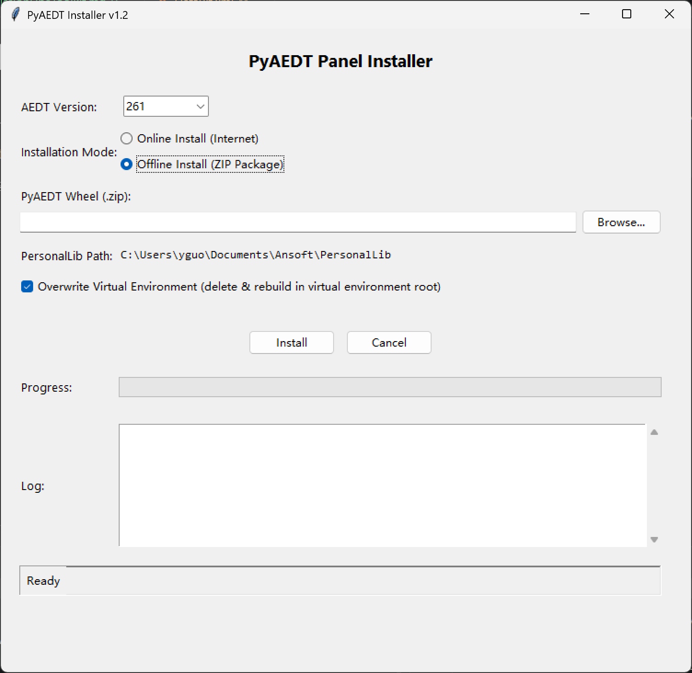

PyAEDT Panel Installer (addPyaedtPanels)
Overview
addPyaedtPanels is a standardized PyAEDT panel installer with a GUI that simplifies PyAEDT configuration and integration on Windows. It supports installing PyAEDT from multiple sources and automatically integrates it into the AEDT design environment.

Requirements
- OS: Windows
- Python: 3.10 or higher
- AEDT: 2023.2 or higher
- Network: Supports both online and offline (wheel file) installation
Tool Location
Toolbox installation directory/
├── UserLib/
│ └── Toolkits/
│ └── addPyaedtPanels/
│ ├── install_pyaedt_gui.py (main GUI application)
│ ├── refactor_utils.py (shared utility functions)
│ └── *.pdf (user guide)
└── ...
Key Functions
1. Virtual Environment Management (create_venv)
- Creates a dedicated Python 3.10 virtual environment
- Location:
%APPDATA%\.pyaedt_env\3_10\(Windows) - Detects existing environments to avoid re-creation
- Isolated dependency management — does not affect system Python
2. PyAEDT Installation
Online Installation (install_pyaedt_online)
- Installs the latest version with automatic dependency resolution
- Requires network access
Offline Installation (install_pyaedt_from_wheel)
- No network required; fast installation
- Requires pre-downloaded
.whlor.zipfile - Ideal for corporate networks and multi-machine deployment
3. AEDT Panel Registration (add_pyaedt_to_aedt)
- Registers PyAEDT as AEDT design panels
- Calls PyAEDT's official installer script
- Auto-creates
PersonalLibdirectory if missing
Workflow
Launch install_pyaedt_gui.py
↓
Detect AEDT environment
├─ Running inside AEDT → relaunch with AEDT CPython 3.10
└─ Standalone → continue with system Python 3.10+
↓
GUI opens
├─ Select installation method (online / offline)
├─ Manage virtual environment
├─ Monitor installation progress
└─ Result feedback
↓
Create virtual environment
└─ At %APPDATA%\.pyaedt_env\3_10\
↓
Install PyAEDT
├─ Online: pip install pyaedt[all]
└─ Offline: pip install --find-links=<path>
↓
Register AEDT panels
└─ ansys.aedt.core.extensions.installer.pyaedt_installer
↓
Complete — restart AEDT to apply changes
Python Environment Priority
The installed venv integrates with Toolbox's Python detection hierarchy:
| Priority | Source | Path |
|---|---|---|
| 1 (highest) | Custom user venv | %APPDATA%\.pyaedt_env\3_10\Scripts\python.exe |
| 2 | System PATH | python.exe in PATH |
| 3 | AEDT bundled | ANSYSEM_ROOT\...\CPython\3_10\...\python.exe |
| 4 (lowest) | IronPython | ANSYSEM_ROOT\common\IronPython |
AEDT Root Detection
The tool auto-scans environment variables for AEDT installations:
# Supported variable formats (case-insensitive):
AnsysEM_ROOT241 # AEDT 2024.1
ANSYSEM_ROOT232 # AEDT 2023.2
Multiple versions are sorted descending — the newest version is used.
GUI Launch Methods
Method 1: Via Toolbox menu → select "PyAEDT Panel Installer"
Method 2: Command line:
python install_pyaedt_gui.py
Method 3: AEDT IronPython console:
exec(open(r"C:\...\addPyaedtPanels\install_pyaedt_gui.py").read())
Toolbox Menu Integration
<SubMenu Type="MenuItem" Name="Install PyAEDT Panel"
ExecuteType="Python"
Path="$UserLib/Toolkits/addPyaedtPanels/install_pyaedt_gui.py"
EntryFunc="main" />
Troubleshooting
| Issue | Cause | Solution |
|---|---|---|
| "AEDT Python not found" | AEDT version too old | Upgrade AEDT to 2023.2+ |
| Permission denied | No write access to venv path | Modify %APPDATA% permissions or change install path |
| Installation timeout | Unstable network | Use offline wheel installation or retry |
| PersonalLib not found | AEDT hasn't created default dir | Handled automatically — no action needed |
Notes
- Do not modify
install_pyaedt_gui.py— it is generated from a standard template - Restart AEDT after installing to load the new panels
- Permissions: Write access to
%APPDATA%is required - Uninstall: Delete
%APPDATA%\.pyaedt_env\to fully remove the virtual environment